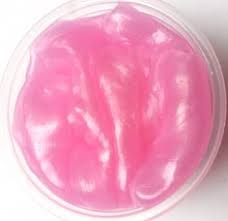
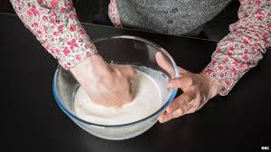
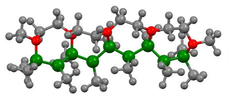
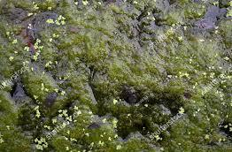
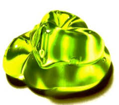
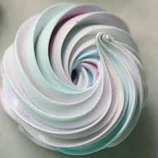
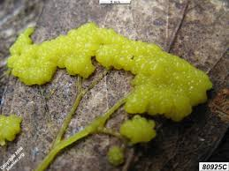

Slime
You know about slime. You've either made it as a science project or else blown the natural version out your nose. Do you know what makes slime different from a regular liquid? Take a look at the science of what slime is, how it forms, and its special properties.
What Is Slime?


Slime flows like a liquid, but unlike familiar liquids (e.g., oil, water), its ability to flow or viscosity is not constant. So, it's a fluid, but not a regular liquid. Scientists call a material that changes viscosity a non-Newtonian fluid. The technical explanation is that slime is a fluid that changes its ability to resist deformation according to shear or tensile stress. What this means is, when you pour slime or let it ooze through your finger, it has a low viscosity and flows like a thick liquid. When you squeeze non-Newtonian slime, like oobleck, or pound it with your fist, it feels hard, like a wet solid. This is because applying stress squeezes the particles in the slime together, making it hard for them to slide against each other.

Most types of slime are also examples of polymers. Polymers are large molecules made of chains of monomers, small molecules that link together. Polymerization is the formation of polymers from these small units. Due to their broad range of properties, both synthetic and natural polymers play essential and ubiquitous roles in everyday life. Polymers can occur naturally (like proteins and carbohydrates) and can be synthesized (like nylon, Teflon, polyethyiene).


Examples of Slime
A natural form of slime is mucous, which consists of mainly of water, the glycoprotein mucin, and salts. Water is
the main ingredient in some other types of human-made slime, too. The classic science project slime recipe mixes
glue, borax, and water. Oobleck is a mixture of starch and water.
Other types of slime are mainly oils rather than water. Examples include Silly Putty and electroactive slime.



